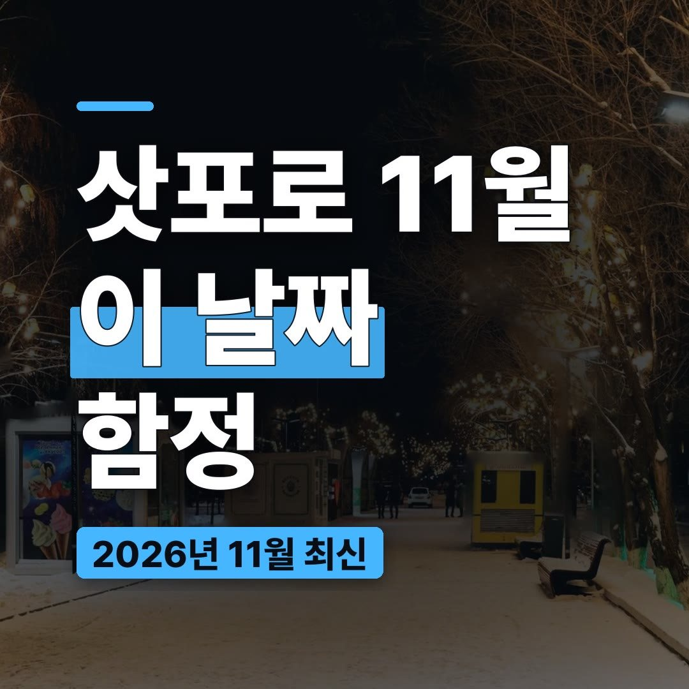
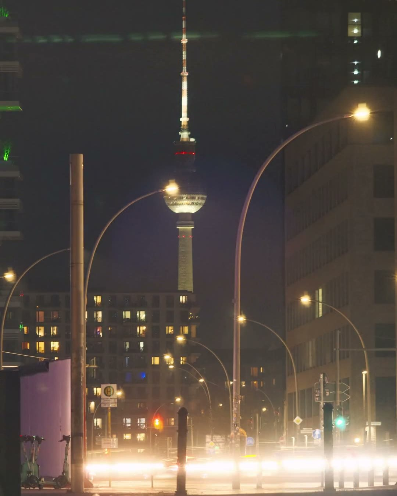
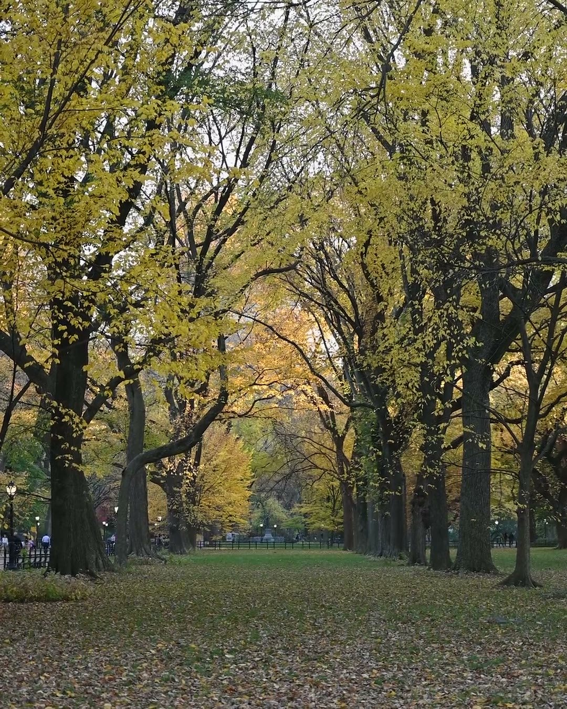
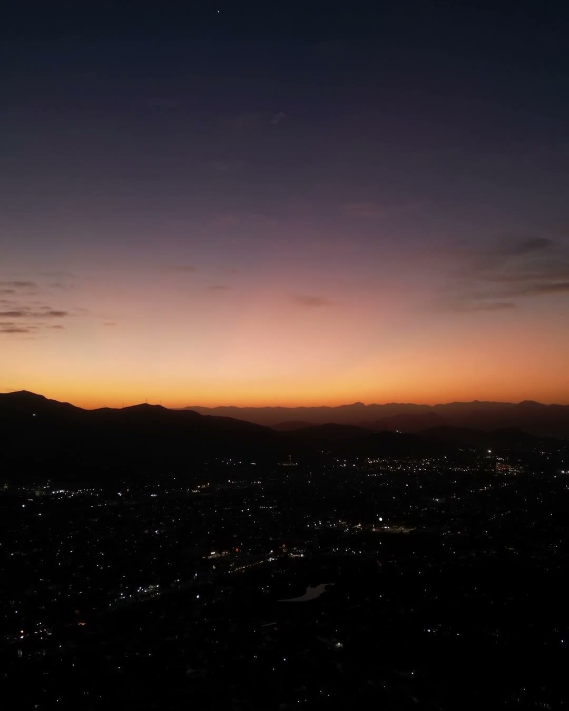
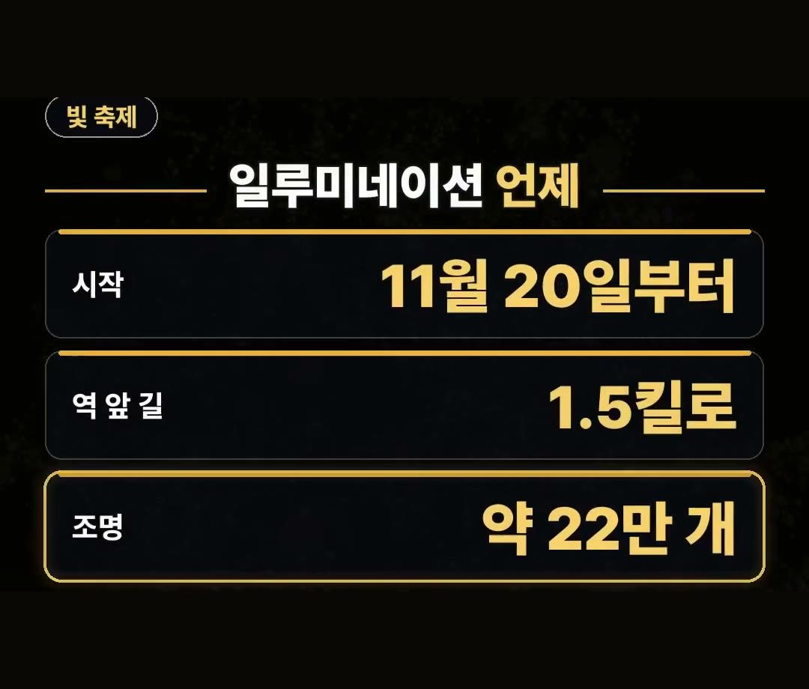
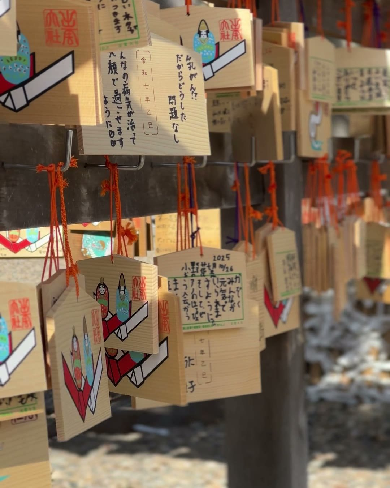
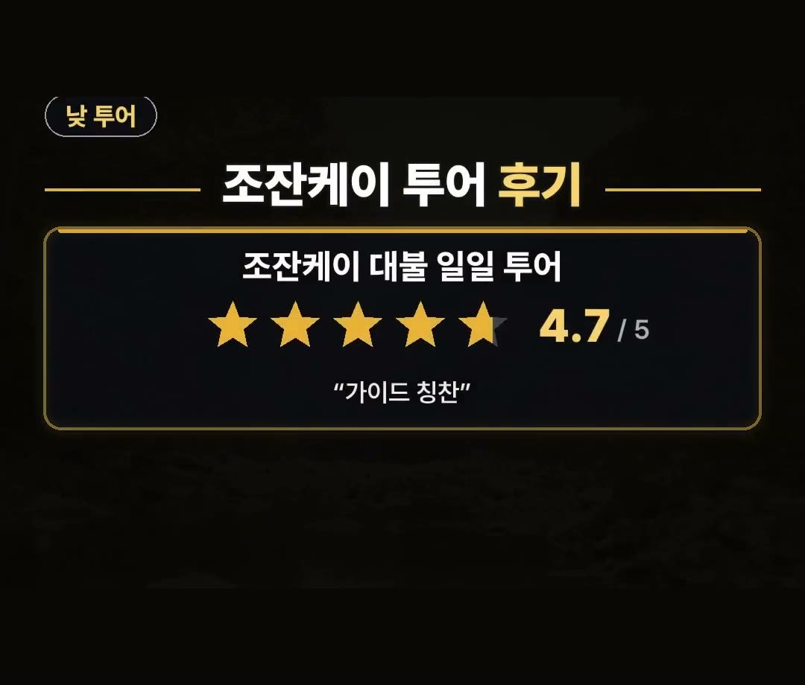

삿포로 11월 여행, 20일 모르면 놓치는 빛 축제와 해 지는 시각
※ 이 글에는 제휴 링크가 포함되어 있으며, 링크를 통해 예약·구매하시면 일정 수수료를 받을 수 있습니다. (가격은 같습니다)
※ 이 포스팅은 쿠팡 파트너스 활동의 일환으로, 이에 따른 일정액의 수수료를 제공받습니다.
삿포로 11월 여행의 결론부터 말씀드리면, 눈 쌓인 거리만 기대하고 가기보다 11월 20일부터 켜지는 불빛 축제와 오후 4시 무렵 해가 지는 시각에 일정을 맞추는 쪽이 일정 짜기에 좋아요.
이유는 아래에서 하나씩 풀어 볼게요.
날씨, 해 지는 시각, 불빛 축제 날짜, 낮 투어, 할인 코드까지 순서대로 정리했으니 일정표를 짜면서 옆에 두고 보셔도 좋아요.

★아낌 소장의 한마디★ 11월 삿포로는 평균 5.2도, 해는 오후 4시 무렵 지고 빛 축제는 11월 20일부터라는 세 가지만 기억하세요!
날짜 하나로 일정이 달라지니 정리해 봤어요 ✨
삿포로 11월 여행, 날씨는 어느 정도일까요

삿포로 11월 여행을 준비할 때 가장 먼저 궁금한 건 날씨죠.
일본 기상청 평년값으로 보면 삿포로의 11월 평균 기온은 5.2도예요.
눈에 대한 기대도 있으실 텐데요.
눈이 처음 쌓이는 날은 평년 기준으로 11월 12일쯤이라고 해요.
- 11월 평균 기온: 5.2도 (기상청 평년값)
- 눈이 처음 쌓이는 날: 평년 11월 12일쯤
눈 쌓인 거리만 기대하고 가면 아쉬울 수 있어서, 눈이 없는 날도 즐길 거리를 같이 짜 두는 게 좋아요.
그래서 삿포로 11월 여행은 눈 구경 하나에 기대를 걸기보다, 낮에는 둘러볼 곳을 정하고 저녁에는 불빛을 보는 식으로 하루를 나눠 보는 쪽이 마음 편해요.
해가 일찍 져요, 저녁 일정은 서두르세요

삿포로 11월 여행에서 의외로 놓치기 쉬운 게 해 지는 시각이에요.
11월엔 해가 오후 4시 무렵 져요.
그래서 저녁 일정을 미루면 낮 시간을 다 쓰고도 밤 풍경을 허둥지둥 보게 될 수 있어요.
- 낮 일정은 일찍 시작하기
- 해가 진 뒤에 볼 것은 저녁 시간에 맞춰 두기
- 저녁 식사는 불빛 구경 전후로 여유 있게 잡기
하루를 낮과 저녁 두 덩어리로 나눠서 생각하면 시간에 쫓기는 느낌이 덜해요.
숙소로 돌아가는 시간까지 미리 떠올려 두시면 더 편해요.
11월 20일부터 켜지는 삿포로 화이트 일루미네이션

삿포로 11월 여행의 하이라이트는 단연 불빛 축제예요.
11월 20일부터 역 앞 1.5킬로 길에 조명 약 22만 개가 켜져요.

- 시작: 11월 20일부터
- 역 앞 길: 1.5킬로
- 조명: 약 22만 개
해가 일찍 지는 시기라서 불빛을 보기에는 오히려 시간이 넉넉한 편이에요.
20일 이전에 가면 아직 켜지기 전이니, 날짜를 꼭 맞춰 보세요.
낮에는 조잔케이 투어는 어떨까요

밤에 불빛을 본다면 낮에는 근교로 나가는 일정도 생각해 볼 수 있어요.
클룩에 올라온 조잔케이 대불 일일 투어는 별점 4.7점이고, 가이드 칭찬이 많아요.
이 별점은 2026년 11월 6일 기준이에요.

- 상품: 조잔케이 대불 일일 투어
- 별점: 4.7점 (11월 6일 기준)
- 후기: 가이드 칭찬이 많아요
눈이 없는 날에도 낮 일정을 채울 수 있어서 11월 일정에 어울리는 선택지예요.
클룩 겨울 투어 할인 코드도 있어요
클룩에서는 겨울 투어에 쓸 수 있는 15% 할인 코드도 안내하고 있어요.
코드는 TNA2026JPKRWINTER15OFF 이고, 2월 28일까지 쓸 수 있으며 최대 1만 3천 원까지 할인돼요.
- 대상: 일본·한국 겨울 투어
- 기한: 2월 28일까지
- 할인: 15%, 최대 1만 3천 원
조건이 있는 코드라서 결제 전에 상품 화면에서 적용되는지 한 번 더 확인해 주세요.
정리
- 삿포로 11월 평균 기온은 5.2도, 눈이 처음 쌓이는 날은 평년 11월 12일쯤이에요.
- 해는 오후 4시 무렵 지니 저녁 일정은 서두르고, 불빛 축제는 11월 20일부터예요.
- 낮에는 별점 4.7점 조잔케이 투어, 겨울 투어 15% 할인 코드는 2월 28일까지, 최대 1만 3천 원이에요.
예약 링크는 아래에 모아 두었어요.
지금 쓸 수 있는 여행사 할인
- 🎟 클룩 일본·한국 겨울 투어 15% 할인 코드 「TNA2026JPKRWINTER15OFF」 (최대 1만 3천 원 · 2월 28일까지)
- 🎟 클룩 일본 어트랙션 5% 할인 코드 「일본어트랙션5%」 (최소 구매 금액 없음 · 최대 4천 원 · 일부 상품 제외 · 쿠폰 취소 시 재발행 불가 · 예산 소진 시 조기 종료 · 12월 31일까지)
※ 여행사 사정으로 조건이 바뀌거나 일찍 끝날 수 있어요. 예약 전에 여행사 화면에서 한 번 더 확인하세요. (2026-10-05 확인)
📘 무료 여행 가이드 전자책 모음 보기 (오사카 · 후쿠오카 · 타이베이 · 도쿄 · 일본겨울) ›
📌 2026년 11월 기준 정보예요. 가격은 환율·시기에 따라 달라질 수 있어요.
· Northern Land Hokkaido 11월 홋카이도 여행 (첫 적설 평년 11월 12일 · 2026년 11월 삿포로 일몰 1일 16:27 · 30일 16:01)
· HOKKAIDO LOVE! 삿포로 화이트 일루미네이션 (오도리 회장 2026년 11월 20일부터 · 에키마에도리 약 1.5km · 약 22만 개 LED)
· 일본 기상청 삿포로 평년값(1991~2020년) 11월 평균 기온 5.2
사진·영상사진·영상: Pexels (C1 Superstar, David Torres, Dr. Mohammad Hoque, Ivan Chumak, K, Marta Wave)